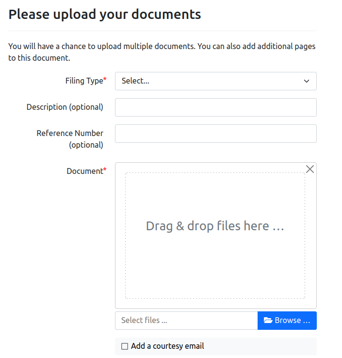

Assembly Line E-filing
Bryce Willey @wowitisbryce
Quinten Steenhuis @QSteenhuis
Why E-Filing?
- A key part in the self-represent litigant experience
- Let's them file wherever they are, no going to court
- Makes things easier for the courts
Project Partners
|
Matt Newsted
Illinois Legal Aid Online |
Amanda Brown
Lagniappe Law Lab |
Requirements
- Need to be able to file with multiple e-filing systems
- Tyler Technologies and ECF v4.0 in Illinois
- Jefferson Parish JeffNet e-filing in Louisiana
- ECF requires domain specific XML over SOAP
...
Technical Motivations
- couldn't find good python SOAP libraries
- not maintained, or missing needed features
- Java was the next best language for SOAP
- Productive with docassemble JSON
- flexible, but guided

The E-file Proxy Server
- Docker-enabled Java Server that takes JSON requests over HTTP/S
- sends proper HTTP requests to JeffNet
- sends SOAP requests to Tyler
The Docassemble Side
- docassemble-integrated python interface
- core questions
- a full general e-filing Interview

Example Usage: LA
Louisiana Statewide Name Change Form
---
code: |
efile_author_mode = False
jurisdiction_id = 'louisiana'
proxy_conn = ProxyConnection(credentials_code_block=None)
---
...
---
mandatory: True
id: main order block
code: |
...
if can_check_efile:
users[0].email
lead_contact
ready_to_efile
...
---
question: |
Your form is read to download
subquestion: |
% if ready_to_efile and not (defined('efile') and efile):
Click the "E-File" button below to e-file your form
at ${ trial_court }.
${ action_button_html(url_ask([{'recompute':['efile']}]),
label='E-file', icon='file-export') }
% endif
---
The Future
- Finish certification process (ongoing)
- ECF v5.0
- Additional EFM system integrations
- Community building: what do you want to see?